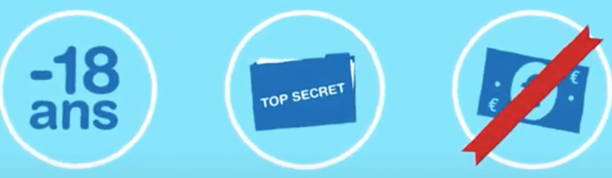

La contraception hormonale d'urgence

Qu'est ce que la contraception hormonale d'urgence
La contraception hormonale d’urgence est une méthode de contraception
qui n’est pas vouée à une utilisation régulière.
En effet, elle contient beaucoup d’hormones et a donc de nombreux effets indésirables, bien qu’ils soient de courte durée.
Elle est plus dédiée à une utilisation permettant de prévoir une grossesse après un rapport
non ou même mal protégé.
Cependant, elle est moins fiable qu’une contraception hormonale régulière et est d’autant plus efficace qu’elle est utilisée
précocement après le rapport.
De plus, elle n’est pas recommandée dans certains cas tels que
les personnes présentant un IMC élevé et l'utilisation répétée de la contraception
d'urgence au cours d'un même cycle.
Type de contraception d'urgence
La contraception hormonale d’urgence contient elle-même 2 sous-catégories.
Qu'est ce que la pilule du lendemain
Elle est composée principalement de lévonorgestrel (généralement un comprimé de 1,5 mg). Elle peut être utilisée jusqu’à 3 jours après le rapport et est 50 fois plus concentrée qu’une pilule microdosée, c’est-à-dire celle correspondant à une pilule quotidienne pendant 21 jours et donc une contraception hormonale régulière.
Les taux de réussites varient entre 99,6% (si elle est prise entre 0 et 24h après le rapport), 98,8% (si elle est prise entre 24 et 48h après le rapport) et 97,3% (si elle est prise entre 48 et 72h après le rapport). Les mineures peuvent recevoir la pilule d’urgence gratuitement, anonymement et sans prescription dans les pharmacies, auprès d’une infirmière scolaire ou dans un Centre de Planification et d’Éducation Familiale (CPEF).
Taux de fiabilité de la pilule du lendemain
0%
0%
0%
Si elle est prise entre 0 et 24 heures
Si elle est prise entre 24 et 48 heures
Si elle est prise entre 48 et 72 heures
Qu'est ce que la pilule du "surlendemain"
Elle est composée principalement d’ulipristal d’acétate (généralement un comprimé de 30 mg). L’ulipristal d’acétate utilise le même principe de fonctionnement que le lévonorgestrel mais l’ulipristal est une molécule qui est effective jusqu’à 5 jours après le rapport.
Tandis que le lévonorgestrel n’est efficace sur une durée de seulement 3 jours, date après laquelle l’ulipristal présente un risque de grossesse moins élevé que le lévonorgestrel. Les taux de réussites varient entre 98,5% (si elle est prise entre 0 et 72 heures après le rapport) et 98,3% (si elle est prise entre 72 et 120 heures après le rapport).
Taux de fiabilité de la pilule du "surlendemain"
0%
0%
Si elle est prise entre 0 et 72 heures
Si elle est prise entre 72 et 120 heures
Information complémentaire sur les molécules
Comme vu précédemment, les contraceptifs hormonaux d'urgences possède